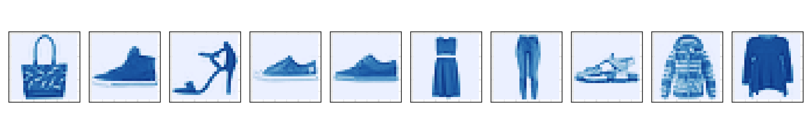
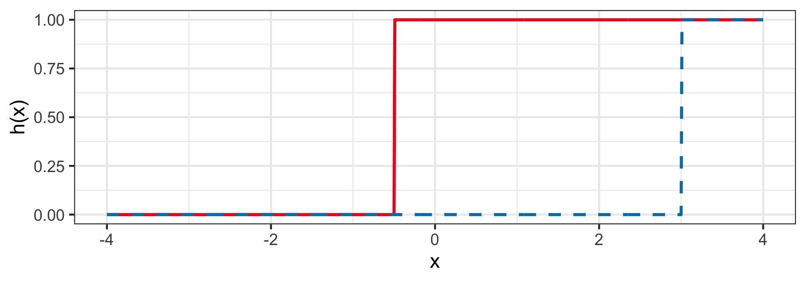
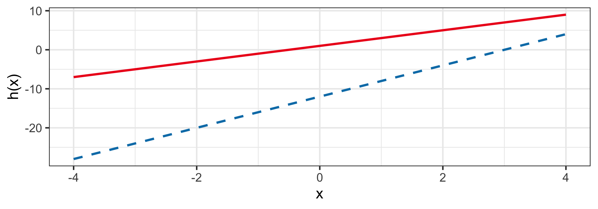
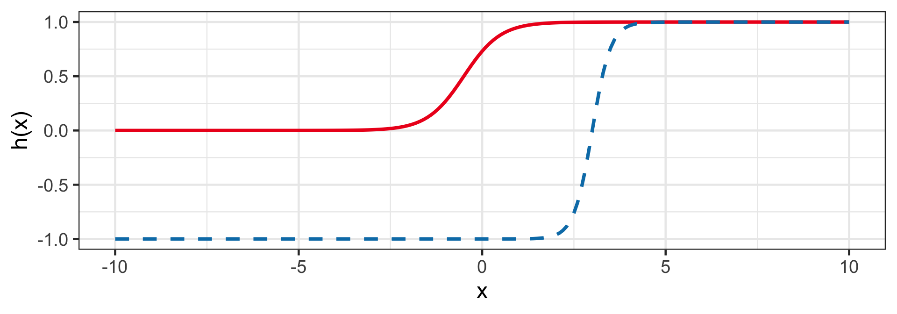
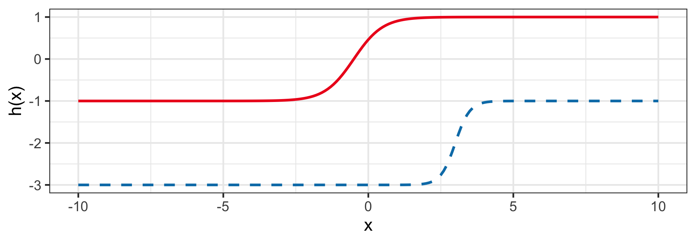
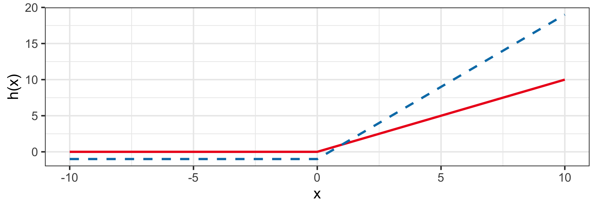

ETC3250/5250
Introduction to Machine Learning
Neural network I
Lecturer: Emi Tanaka
Department of Econometrics and Business Statistics
Supervised learning
- So far you have learnt about:
- linear, non-linear & logistic regression
- linear & quadratic discriminant analysis
- decision trees
- tree-ensemble methods (bagging, boosting, random forest)
- k-nearest neighbours
- support vector machine methods
- But these methods still don’t perform well for some tasks, e.g. image recognition.
Human brain
- Our brains can dissect and process features of images, e.g. the shape, object, lighting, etc.

- The human brain is made of billions of neurons that communicate via electrochemical signals.
- So how do we mimic this in a program?
Artificial neuron
Biological neuron model
- Artificial neural network, or often referred to just as neural network, was inspired by the biological neural network.
- In a biological neural network, a collection of neurons interconnected by synapses carry out a specific function when activated.

- The dendrites receive synaptic inputs and propogate electrochemical stimulation to the cell body - if stimulated enough, a neuron fires an action potential (synaptic inputs for other neurons).
Artificial neuron: dendrites
- The artificial neuron is the elementary units of an artificial neural network.
- The artificial neuron receives predictors \boldsymbol{x}_i = (1, x_{i1}, \dots,x_{ip})^\top that is typically combined as a weighted sum:
z_i = \beta_0 + \sum_{j=1}^p\beta_jx_{ij} = \boldsymbol{\beta}^\top\boldsymbol{x}_i, \quad\text{where }\boldsymbol{\beta} = (\beta_0, \beta_1, \dots, \beta_p)^\top.
Artificial neuron: action potential
- The z_i then get passed into the activation function, h(z_i).
- Suppose a is the location parameter and w is the scale parameter.
- Some common choices include:
- Heaviside step: h(z_i) = \mathbb{I}(z_i > 0),
- Linear: h(z_i) = z_i,
- Sigmoid: h(z_i|a,w) = a + w(1+e^{-z_i})^{-1},
- Tanh: h(z_i|a,w) = a + w \left(\frac{2}{1+e^{-2z_i}} - 1 \right), and
- ReLU: h(z_i|a,w) = a + w \times \max(0, z_i).
Visualising artifical neuron
When x_1 = 1 and x_2 = 3, then \begin{align*}z &= \beta_0 + \beta_1x_1 + \beta_2 x_2\\ &= 1 + 0.5 \times 1 - 3\times 3 = -7.5.\end{align*}
Using ReLU with a = 1, w = 2, the prediction is 1 + 2 \times \max(0, z) = 1.
Predicting from an artificial neuron
Your turn!
- What is the prediction when x_1 = 10?
3
- What is the prediction when x_1 = -5?
-11
Activation function
Heaviside step
h(z_i) = \mathbb{I}(z_i > 0)
- This is also known as the perceptron and is used for classification.
- For example: h(1 + 2x_i) and h(-12 + 4x_i).

Linear
h(z_i) = z_i
- This is a regression model!
- For example: h(1 + 2x_i) and h(-12 + 4x_i).

Sigmoid (Logistic)
h(z_i|a,w) = a + w(1+e^{-z_i})^{-1}
- When a = 0 and w = 1, then 0 < h(z_i) < 1 for finite z_i.
- E.g. h(1 + 2x_i|a = 0, w = 1) and h(-12 + 4x_i|a = -1, w = 2).

Hyperbolic tangent (Tanh)
h(z_i) = a + w \left(\frac{2}{1+e^{-2z_i}} - 1 \right)
- Similar to Sigmoid.
- E.g. h(1 + 2x_i|a = 0, w = 1) and h(-12 + 4x_i|a = -1, w = 2).

Rectified linear unit (ReLU)
h(z_i) = a + w \times \max(0, z_i)
- Sigmoid and Tanh are largely replaced by rectified linear unit (ReLU).
- E.g. h(1 + 2x_i|a = 0, w = 1) and h(-12 + 4x_i|a = -1, w = 2).

Neural network
Limitations of a single artificial neuron
- Biological neurons are interconnected in complex networks that allow the brain to perform a wide range of functions.
- A single artificial neuron has a limited ability to model complex relationships so much like its biological counterpart, we can connect different artificial neurons to model complex relationships.
- An artifical neural network, the interconnection of the artificial neurons, began by mimicing the architecture of brain activity.
- But neural network is no longer true to their biological counterpart and its development is motivated by empirical results.
Multiple artificial neurons
- When combining artificial neurons, we always set a = 0 and w = 1 for Sigmoid, Tanh, and ReLU.
Combining artificial neurons for regression
- In general, we combine K neurons as f(\boldsymbol{x}_i) = b + \sum_{k=1}^Kw_kh(\boldsymbol{\beta}_k^\top\boldsymbol{x}_i)
- \boldsymbol{\beta}_k is the coefficient of predictors in the k-th artificial neuron,
- b is called the bias,
- w_k is the weight corresponding to the k-th neuron.
- The activation function h is always of the same type.
Example of combining artificial neurons
f(\boldsymbol{x}_i) = b + w_1{\color{#027EB6}{h(\boldsymbol{\beta}_1^\top\boldsymbol{x}_i)}} + w_2\color{#EE0220}{h(\boldsymbol{\beta}_2^\top\boldsymbol{x}_i)}
This represents a neural network with
- 2 nodes in the input layer,
- 2 nodes in the middle layer, and
- 1 node in the output layer with parameters:
- b = 0,
- w_1 = 0.5,
- w_2 = 0.9,
- \boldsymbol{\beta}_1 = (3, -5)^\top,
- \boldsymbol{\beta}_2 = (1, 0.5)^\top, and
- h is the ReLU activation function with a = 0 and w = 1.
Combining artificial neurons for classification
- The output of the previous example is only applicable for regression problems.
- We can easily modify this for classfication by changing the output layers to say the Sigmoid function, which gives a numerical value between 0 and 1 and can be thought of as the propensity score. P(y_i = 1 | \boldsymbol{x}_i) = \frac{1}{1 + \exp\left(-(b + \sum_{k=1}^Kw_kh(\boldsymbol{\beta}_k^\top\boldsymbol{x}_i))\right)}.
Regression vs classification
- In a neural network, initial layers can be identical for regression or classification.
- It is the output layer that determines if it can be used for regression or classification!
Multi-class classification
Multi-class classification
- The Sigmoid functions allows for computation of propensity scores for binary outcomes.
- If you have more than two classes in your response, then you need to convert it to dummy variables, or otherwise referred to as one-hot encoding.
- So for a categorical variable with m levels, y_i \in \{\text{Class 1}, \dots, \text{Class }m\}, we convert it as: y_{ik} = \begin{cases}1 & \text{if } y_i = \text{Class}k\\0 & \text{if } y_i \neq \text{Class}k\end{cases}
From categorical variable to dummy variables
petcat petdog petfish
1 1 0 0
2 0 1 0
3 1 0 0
4 0 0 1
attr(,"assign")
[1] 1 1 1
attr(,"contrasts")
attr(,"contrasts")$pet
[1] "contr.treatment"Softmax activation function
The Sigmoid function only works for m = 2.
For m > 2, we can use the Softmax activation function instead: P(y_{ij} = 1 | \boldsymbol{x}_i) = \frac{\exp(\boldsymbol{\beta}_j^\top\boldsymbol{x}_i)}{\sum_{j=1}^m\exp\left(\boldsymbol{\beta}_j^\top\boldsymbol{x}_i\right)}.
The number of neurons for the Softmax layer must be m.
Note that \sum_{j=1}^m P(y_{ij} = 1 | \boldsymbol{x}_i) = 1.
An illustration of a Softmax layer
- Suppose we have the income of a customer in thousands of dollar.
- We want to predict if the customer will buy a “cheap”, “average” or “expensive” brand of clothing brand.
- What is the probability that customer with an income of $45K will buy a cheap brand based on this trained neural network?
Solution
Layer 2
- ReLU: \max(0, 49.62 - 0.37 \times 45) = 32.97
- ReLU: \max(0, 27.62 - 0.19 \times 45) = 19.07
- ReLU: \max(0, -1.72 + 0.35 \times 45) = 14.03
Output layer
- Cheap: \frac{\exp(32.97)}{\exp(32.97) + \exp(19.07) + \exp(14.03)} = 0.9999991
- Average: \frac{\exp(19.07)}{\exp(32.97) + \exp(19.07) + \exp(14.03)} = 0.00000092
- Expensive: \frac{\exp(14.03)}{\exp(32.97) + \exp(19.07) + \exp(14.03)} = 0.0000000059
Prediction: The customer will buy the cheap brand.
Building a neural network structure with R
Installing keras
- Keras is an open-source software library that uses the TensorFlow library to fit artificial neural networks.
- We can use the Keras library through the
keraspackage in R. - To install
keras, run the following commands:
- Be warned that the installation poses issues often due to
keraslooking at the wrong location for the Keras library.
Building a neural network structure in R
keras_model_sequential()must be used first to initialise the architechture.layer_dense()indicates a new layer with:unitsindicating the number of neurons in that layer,input_shapeindicating the number of predictors (only needed for the firstlayer_dense()),activationspecifying the activation function for that layer.
Examining the weights and biases
- You can extract the weights and biases using
get_weights():
- Every even entry is the bias of the nodes (here all 0s).
- The weights are given in every odd entry in the order of the layers.
Manually setting the weights
w <- get_weights(model)
w[[1]] <- matrix(c(49.62, -0.37, 27.62, -0.19, -1.72, 0.35), nrow = 2)
w[[3]] <- diag(3)
set_weights(model, w)
get_weights(model)[[1]]
[,1] [,2] [,3]
[1,] 49.62 27.62 -1.72
[2,] -0.37 -0.19 0.35
[[2]]
[1] 0 0 0
[[3]]
[,1] [,2] [,3]
[1,] 1 0 0
[2,] 0 1 0
[3,] 0 0 1
[[4]]
[1] 0 0 0- Let’s manually set the weights as the previous example:
Prediction from neural network model
- Normally we need to train the model but this will be covered next week.
- Suppose the manually set weights are a result from a trained model.
- You can predict the probability a customer with an income of $45K will buy a cheap, average or expensive brand with:
- Note that you need to have the new data in a matrix format with the intercept!
Takeaways
- Neural networks are flexible models that can be used for both regression and classification problems.
- The activation function in the output layer determine if the neural network can be used for regression or classification.
- More neural network to come next week!

ETC3250/5250 Week 11